Next: 3.2.7 The VARIABLES or
Up: 3.2 Indicator and Data
Previous: 3.2.5 The Definition of
3.2.6 The GROUPS, ROWS or
CONSTRAINTS Data Cards
(variable/column-wise)
The GROUPS, ROWS and CONSTRAINTS
indicator cards
are used interchangeably to announce the names of the groups
which make up the objective function
or, for constrained
problems, the names of the constraints
(or rows, as they are often known in linear programming
applications). The user may give a scaling factor for the groups or
constraints.
In addition, groups which are linear combinations of
previous groups may be specified. The syntax for the data cards
which follow these indicator cards
is given in Figure 3.7.
Figure 3.7:
Possible data cards for GROUPS, ROWS or
CONSTRAINTS
(column-wise)
| 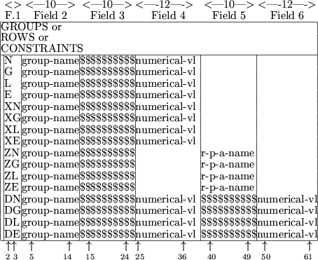 |
The one- or two-character string in data field 1 specifies the type of
group, row or constraint
to be input. Possible values for the first
character are:
- N :
- the group is to be specially marked (for constrained problems, the
group/row is an objective function group/row).
- G :
- the group is to use an extra ``artificial'' variable; this variable
will only occur in this particular group, will be non-negative and its
value will be subtracted from the group function. For constrained
problems, this is equivalent to requiring the constraint/row be
non-negative; the extra variable is then a surplus variable and
whether it is used explicitly (considered as a problem variable) or
implicitly will depend upon the optimization technique to be used.
Thus, if the problem variables are
 , and the 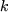-th group has a
linear element
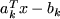, the linear element that will be passed
to the optimization procedure could be
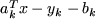, for some
non-negative variable 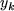.
, and the 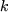-th group has a
linear element
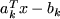, the linear element that will be passed
to the optimization procedure could be
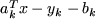, for some
non-negative variable 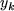.
- L :
- the group is to use an extra ``artificial'' variable; this variable
will only occur in this particular group, will be non-negative and its
value will be added to the group function. For constrained problems,
this is equivalent to requiring the constraint/row
be non-positive; the extra variable is then a slack
variable and may be used explicitly or implicitly by the optimization
procedure. Thus, if the linear element
is as specified above, the
linear element that will be passed to the optimization procedure could
be
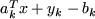, for some non-negative variable
 .
.
- E :
- the group is a normal one (for constrained problems, the
row/constraint is an equality),
- X and Z :
- an array
of groups are to be defined at once. When the first
character is an X or Z, the second character may be one of
N, G, L or E. The resulting array
of groups
then each has the characteristics of an N, G, L or
E group as just described.
- D :
- the group is to be formed as a linear combination of two previous
groups. When the first character is a D, the second character
may be one of N, G, L or E. The resulting
group then has the characteristics of an N, G, L or
E group as just described.
The string group-name
in data field 2 gives the name of the group (or row or constraint)
under consideration. This name may be up
to ten characters long, excepting that the name `SCALE'
is not
allowed. For X data cards,
the expanded array
name must be valid and the integer indices must have been defined in
a parameter assignment (see Section 3.2.3).
The string
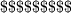 in data field 3 may be blank;
this
happens when field 2 is merely announcing the name of a group. If it
is not blank, it is used for two purposes.
- It may be used to announce that the
group function under consideration is to be scaled, that is
divided by a constant scale factor; in this case field 3 will
contain the string `SCALE'.
If the first character in field 1 is a Z, the string in data
field 5 gives the name of a previously defined real parameter
and the
numerical value associated with this parameter gives the scale factor.
Otherwise, the string numerical-vl, occupying up to 12 locations
in data field 4, contains the scale factor. Fields 5 and 6 are not
then used.
- If the first character in field 1 is a D, the current group is
to be formed as a linear combination of the groups mentioned in fields
3 and 5; the multiplication factors are then recorded in fields 4 and
6 respectively. Thus we will have
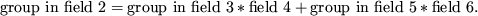
In this case, the names of the groups in fields 3 and 5 must have
already been defined. The multiplication factors may occupy up to 12
locations in fields 4 and 6.
Next: 3.2.7 The VARIABLES or
Up: 3.2 Indicator and Data
Previous: 3.2.5 The Definition of